毎日をちょっと楽にする、家族みんなのためのアプリ。
迷ったときは、このページを見返してね。
はじめてお使いになるときは、先に設定ガイドをご覧ください。
外部サービスの準備（3手順）と、お子さんに合わせる設定（呼ばれ方・学年・天気の地域・家族の呼び名など）を、画面の写真つきでまとめています。
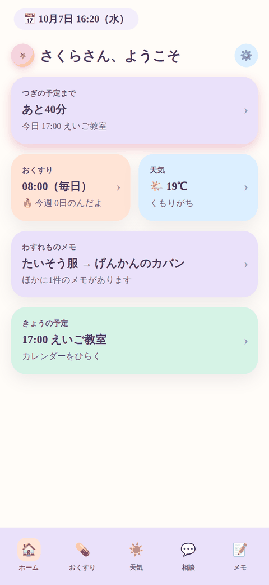
アプリを開くと、まず「つぎの予定まであと何分か」がひと目でわかるよ。おくすり・天気・わすれものメモ・今日の予定も、この1画面に全部まとまっているから、いちいち探さなくて大丈夫。
カードをタップすれば、そのままくわしい画面にうつれるよ。
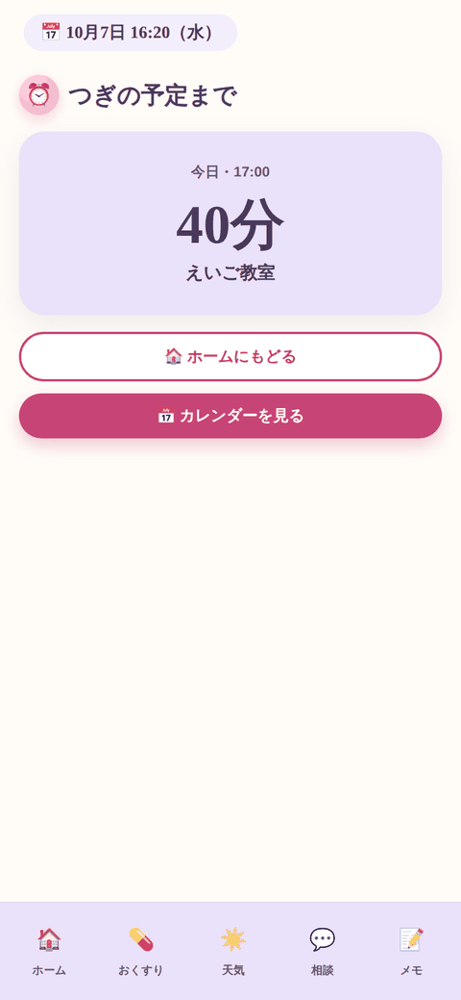
ホームの「つぎの予定まで」をタップすると、この画面になるよ。残り時間だけが大きく出るから、支度をしながらチラッと見るのにちょうどいい。
予定が近づいてくると、数字がどんどん減っていくのが見えるよ。
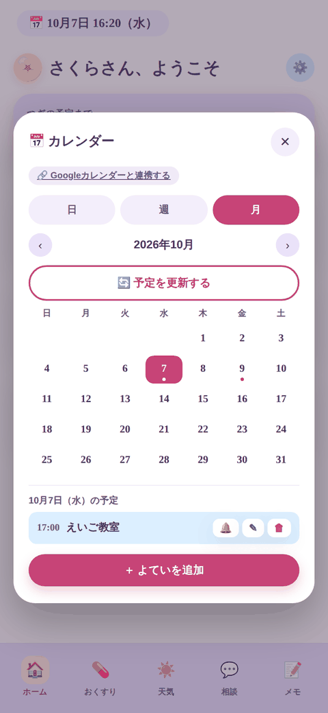
「日」「週」「月」をタップひとつで切り替えられるよ。今日だけ見たいときも、月ぜんぶ見たいときも、どちらもOK。Googleカレンダーをつないでいれば、家族の予定もいっしょに出るから、二重に予定を書く必要はなし。
予定が最新じゃないかも？と思ったら、「🔄予定を更新する」を押せばすぐに取り直してくれるよ。
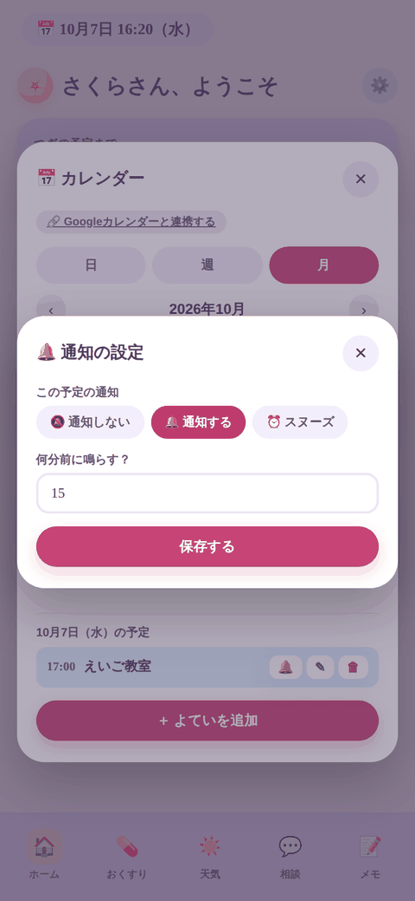
予定の横にある🔔を押すと、その予定だけの通知を設定できるよ。「通知しない」「何分前に鳴らすか決めて通知する」「本人が止めるまで鳴りつづけるスヌーズ」の3つからえらべる。
毎週くり返す予定は「今後すべて」を選べば、シリーズ全部に一括で同じ設定にできるよ。
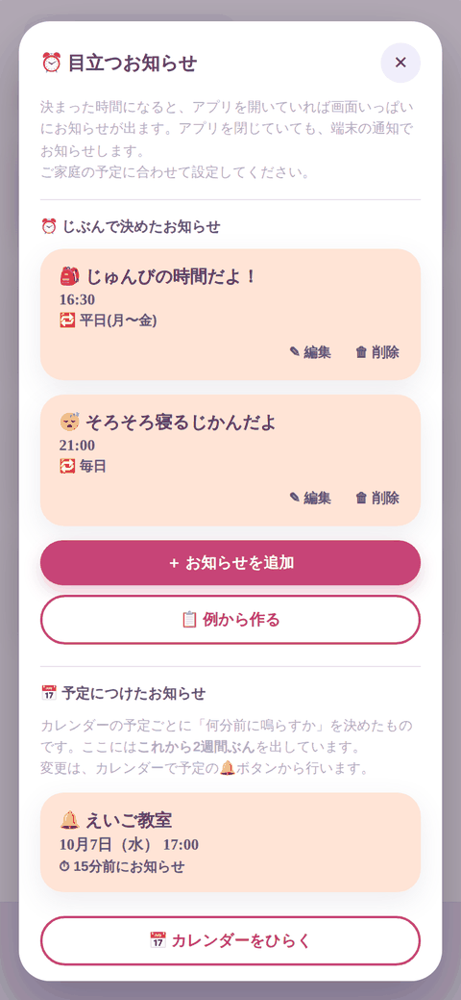
「16:30になったら、じゅんびの時間だよ」みたいに、決めた時刻になると画面いっぱいに出るお知らせだよ。アプリを閉じていても、端末の通知で教えてくれる。
曜日もえらべるから、「平日だけ」「土日だけ」もできるし、「◯月◯日の1回だけ」にすることもできるよ。1回だけのお知らせは、その日が過ぎると自動で片づくから、消し忘れの心配なし。
同じ画面の下のほうに、カレンダーの予定につけた通知もまとめて出るよ。「何がいつ鳴るのか」を1か所で確かめられる。
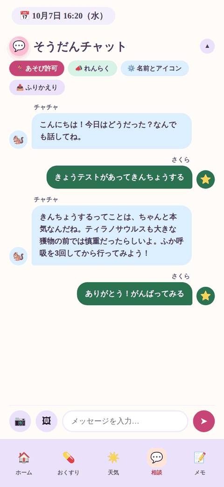
AIのおともだちに、今日あったこと・ちょっとしたなやみごと・どうでもいい話まで、なんでも話しかけてOK。写真を送って見てもらうこともできるよ。
名前も、しゃべり方も、自分の好きなように変えられる。設定した学年に合わせて、言葉づかいや漢字をあわせて話してくれるよ。
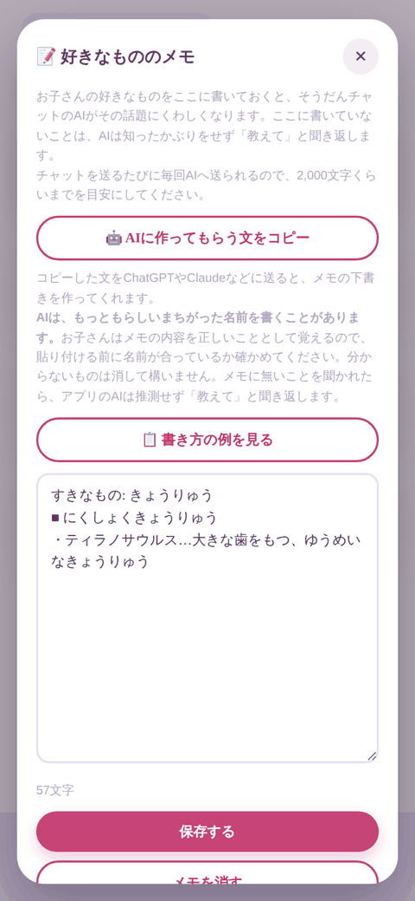
好きなゲームやアニメ、生きものについて書いておくと、そうだんチャットの話がぐっと通じやすくなるよ。用語をいちいち説明しなくてよくなる。
自分で書いてもいいし、⚙️の「🤖 AIに作ってもらう文をコピー」を押して、その文をChatGPTなどに貼れば、下書きを作ってもらうこともできるよ。できた文は、おうちの人といっしょに中身を確かめてから貼りつけてね。
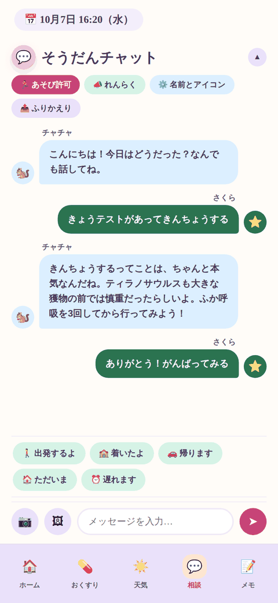
📣を押すと出てくる「出発するよ」「着いたよ」「帰ります」「ただいま」「遅れます」のスタンプ。タップするだけで、その場ですぐおうちの人のLINEに届くよ。文章を打つ手間なし。
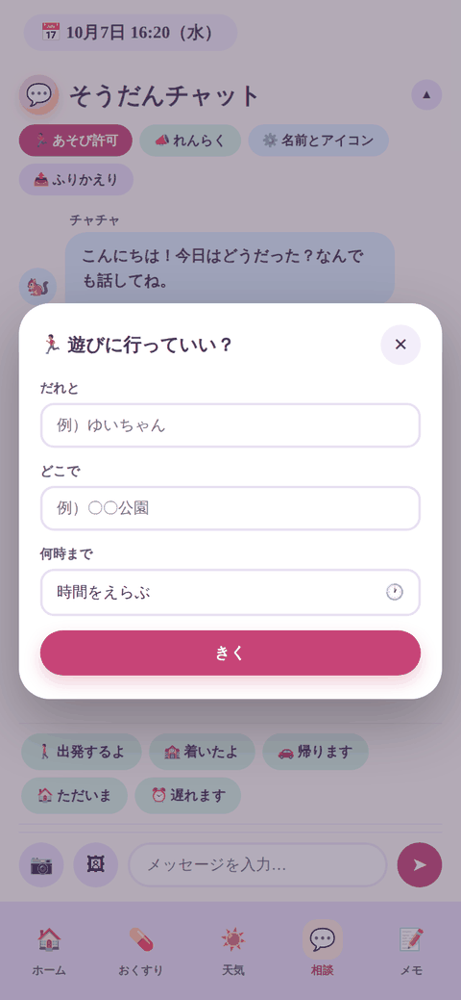
急に「遊びに行きたい！」ってなったら、この画面から「だれと」「どこで」「何時まで」を入力するだけ。その日の予定とおうちのルールを照らして、その場ですぐ答えが返ってくるよ。
同時に、申告した内容がおうちの人のLINEにも自動で届くから、あとから報告しなくて大丈夫。
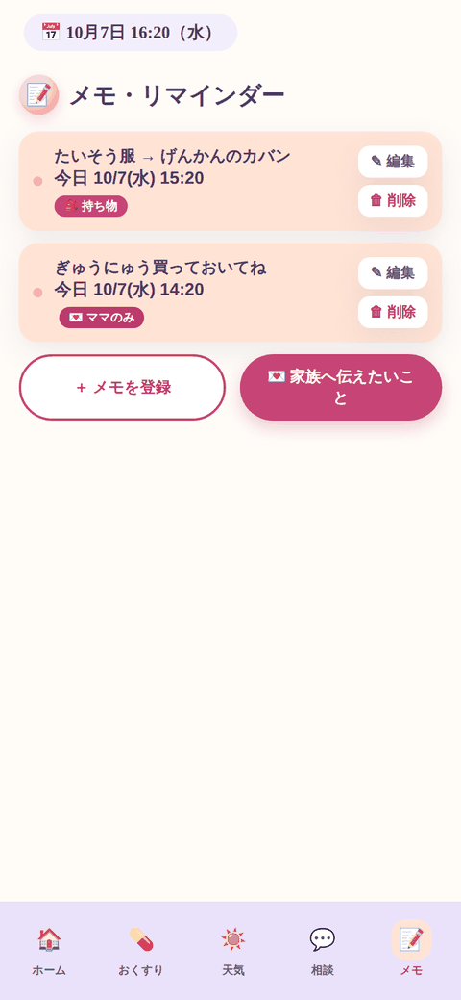
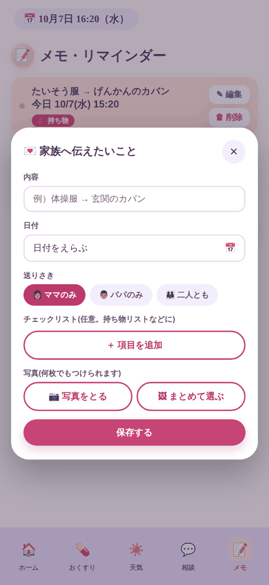
「＋メモを登録」は、自分だけが見るわすれものリストや記録用。日付をえらべるから、「あしたの持ち物」も先に書いておけるよ。
「💌家族へ伝えたいこと」は、送りさきをえらんで書くと、その人のLINEに通知が届くよ。写真やチェックリストも付けられる。
送りさきに出てくる名前は、おうちの人が⚙️で決めた呼び名だよ（「ママ」「パパ」「おばあちゃん」など、おうちごとにちがうよ）。
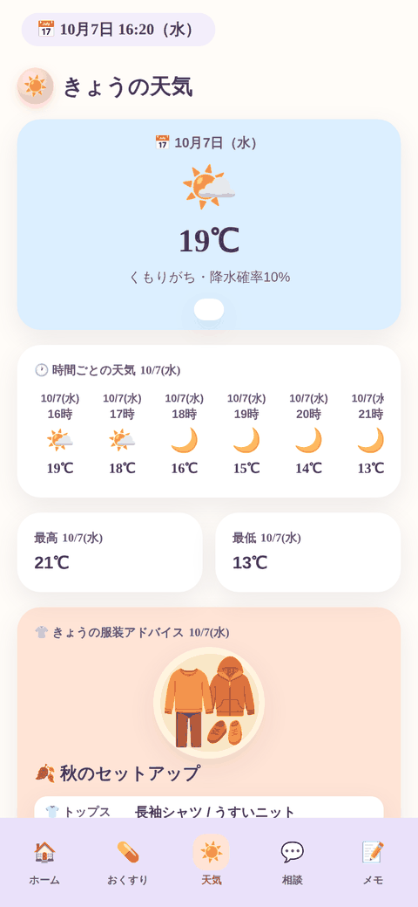
今の気温・降水確率はもちろん、時間ごとの天気の変化もチェックできるよ。傘がいるかどうかも、ひとことで教えてくれる。
どこの天気を出すかは、⚙️の「天気の地域」で決めるよ。決めていないときや、位置情報を許可していないときは、まちがった街の天気を出さないように、あえて何も出さないようにしてあるよ。
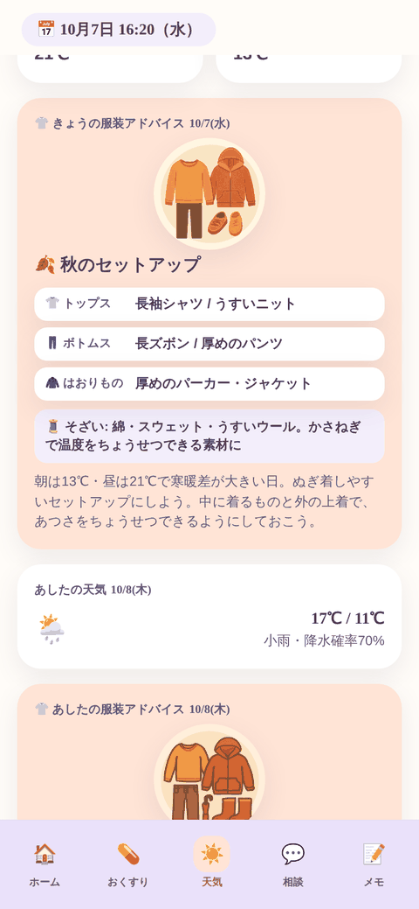
気温と降水確率から、その日にちょうどいい服装をイラスト付きで教えてくれるよ。トップス・ボトムス・はおりもの・そざいまで、季節に合わせて提案。あしたの分もあらかじめ見られる。
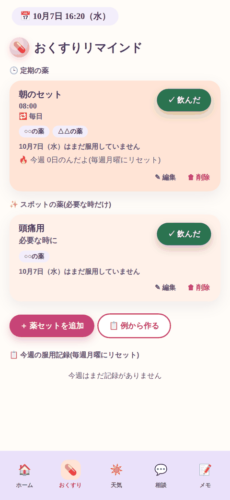
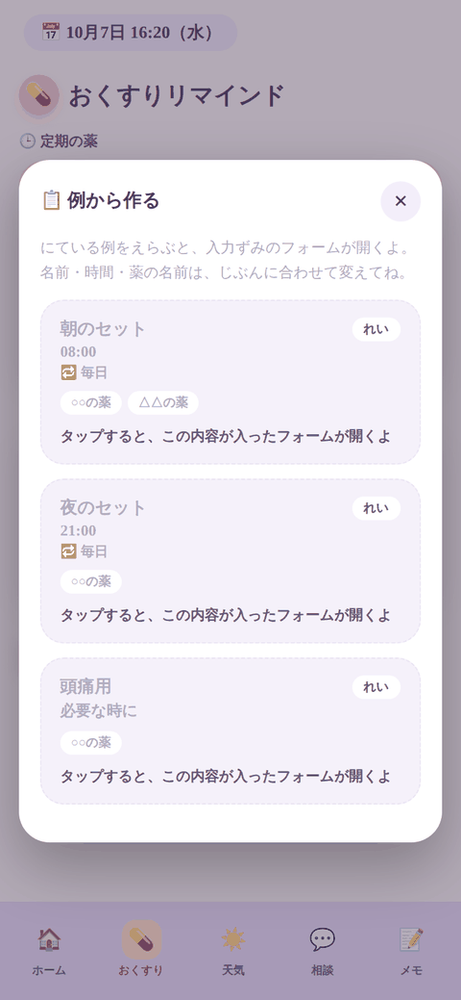
「✓ 飲んだ」を押すだけで記録完了。いつ飲んだか、今週何日飲んだかも自動でまとめてくれるよ。記録は毎週月曜にリセットされるから、いつも今週分だけスッキリ見られる。
はじめは空っぽだよ。「📋 例から作る」を押すと、朝のセット・夜のセット・頭痛用などの形だけの見本が出てくるから、それを土台にして自分の薬の名前と時間に書きかえてね。見本がそのまま記録になることはないよ。
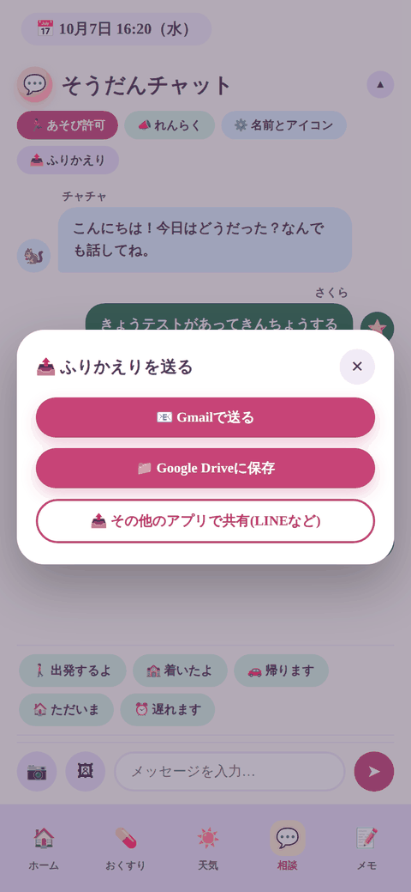
そうだんチャットのやり取りを、Gmailで送ったり、Google Driveに保存したり、LINEなど好きなアプリで共有したりできるよ。あとで見返したいときや、家族に共有したいときに便利。
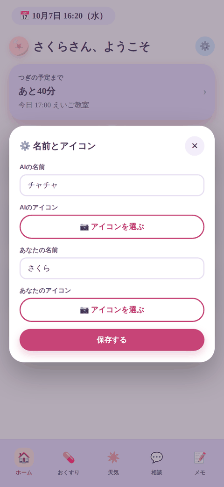
AIの名前や、自分のニックネーム、それぞれのアイコン画像を好きに変えられるよ。長く使うものだから、自分がしっくりくる形にしてね。
⚙️の中では、画面の色やAIのしゃべり方も変えられるよ。
このアプリのデータは、その端末の中だけに入っています。開発者の手元には控えがありません。
機種変更やアプリの入れ直しの前に、⚙️ →「データのバックアップ」で控えを書き出して保管してください。やり方は設定ガイドにあります。